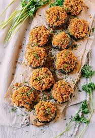

Stuffed Mushrooms

There really is no wrong way to prepare a stuffed mushroom.
It's nothing more than a healthy and tasty vehicle to deliver whatever
it's filled with directly to your tummy. There are endless options: bacon, cheese,
breadcrumbs, garlic, etc... With that in mind, this recipe is a simple classic, but feel free
to modify it to your heart's content.
Ingredients
- 12 oz white mushrooms
- 6 tbsp salted butter
- 1/2 tsp onion powder
- 1/2 tsp garlic powder
- 1/2 tsp thyme
- 1/2 paprika
- 3/4 cup bread crumbs
- 1/3 cup grated parmesan
- fresh parsley
Directions
- Clean out inside of mushroom caps and place on baking sheet
and brush with melted butter
- Take everything except for the breadcrumbs and mix them together.
Load up the mushroom caps with the mixture and top off with breadcrumbs.
- Place in a 375 degree F oven for 9-12 minutes. Enjoy!